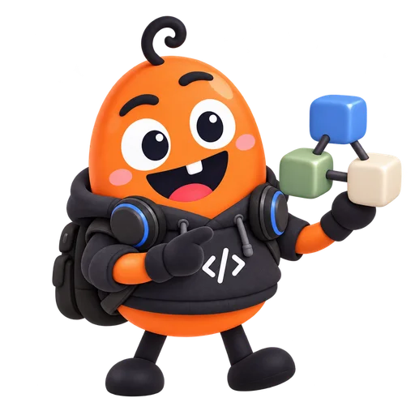

DKDLQODDI · PRESENTATION LOG
새 발표자료
추가 방법
이 자료가 공통 템플릿의 본보기입니다.
복사 → 수정 → 등록 → 공개

1단계 — 폴더 복사
slides/sample/ 폴더를 복사해slides/my-talk/처럼 새 이름을 붙입니다.
폴더 이름은 영문 소문자와 하이픈만 사용합니다.
이 이름이 곧 공유 주소가 됩니다:https://dkdlqoddi.github.io/slides/my-talk/

2단계 — 내용 수정
index.html의 <section> 하나가 슬라이드 한 장입니다.
색상·글꼴은 assets/chalk-theme.css,
도식은 shared/lesson-layout.css를 공유합니다.
한 장에는 질문 하나와 단계별 도식·해설을 넣습니다.
카드·표는 data-chalk-group으로 순서대로 표시합니다.
캐릭터 배치는 shared/jelly-woo.css를 공유합니다.
큰 포즈는 왼쪽, 작은 포즈는 오른쪽 위에 둡니다.

3단계 — 목록에 등록
루트 slides.json의 학습 순서에 맞는 위치에 추가합니다.
{
"track": "novice", "module": "N5", "path": "core",
"prerequisites": "N4 · 검토 경험", "next": [],
"pdf": "my-talk.pdf", "slideCount": 8
}과정 필드의 일부 예시입니다. 전체 항목은 README에서 확인합니다.build_course_catalog.py로 정적 목록도 갱신합니다.

4단계 — 공개
모바일·기존 링크·판서·PDF를 확인하고 PR 리뷰를 받습니다.
승인된 변경이 main에 반영되면 사이트가 갱신됩니다.
모든 과정의 PDF는 export_pdfs.cjs로 만듭니다.
Reveal과 Pretendard는 로컬 자산을 계속 사용합니다.
보너스 — 단계 공개
그림 설명: 복사, 수정, 등록 세 상자가 차례로 나타나며 화살표로 이어집니다.
화살표 키를 누르면 그림 조각이 차례로 나타납니다.
보너스 — 모핑
그림 설명: 세 상자가 왼쪽으로 좁혀지며 이동하고, 넷째 상자 공개가 더해집니다.
장을 넘기면 같은 상자가 미끄러지며 이어집니다.